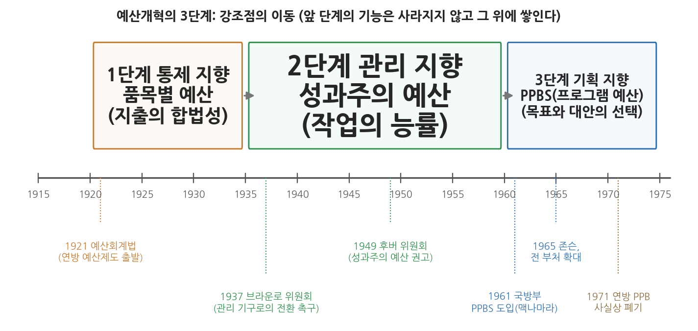

13주차 1차시. 예산개혁: 쉬크의 PPB로 가는 길: 통제·관리·기획
최종 수정: 2026-10-06 · 이 교재는 학기 중에도 계속 업데이트됩니다
모든 차이점은 결국 한 문장으로 요약할 수 있다. 예산 편성의 정신이 정당화에서 분석으로 옮겨 갈 것이라는 문장이다. (앨런 쉬크, 「PPB로 가는 길」)
이 장에서 배우는 것
정부의 예산서를 처음 펼쳐 본 사람은 대개 실망한다. 나라의 한 해 살림을 담은 문서인데, 내용은 끝없이 이어지는 항목과 숫자의 나열처럼 보이기 때문이다. 그런데 그 지루해 보이는 분류 방식이야말로 이 장에서 다루는 핵심 주제다. 예산을 "볼펜 몇 자루, 인건비 얼마"로 적을 것인가, "도로 포장 1킬로미터당 비용"으로 적을 것인가, 아니면 "교통사고 사망자를 줄이는 프로그램에 얼마"로 적을 것인가. 이 세 가지 적는 방식은 각각 다른 질문에 답하도록 설계된 것이고, 그 질문들은 각각 다른 시대가 정부에 던진 질문이었다.
행정이론은 교과서 속에만 머물지 않는다. 이론은 제도가 되어 현실을 움직이는데, 그 이론이 가장 구체적인 제도로 구현되는 영역이 바로 예산이다. 부패를 막자는 진보주의 시대의 개혁론은 품목별 예산이 되었고, 능률적 관리를 내세운 행정국가의 이론은 성과주의 예산이 되었으며, 합리적 의사결정의 이상은 기획예산제도(PPBS)가 되었다. 그래서 예산의 역사를 읽는 일은 곧 행정이론의 역사를 제도의 언어로 다시 읽는 일이다. 이 각축의 전개 과정을 한 편의 논문으로 정리한 사람이 앨런 쉬크다.
이 장은 미국의 이야기로 끝나지 않는다. 한국의 예산제도 역시 같은 질문을 거쳐 왔다. 1999년의 예비타당성조사, 2004년 무렵 시작된 총액배분자율편성과 국가재정운용계획, 2007년 시행된 국가재정법과 프로그램 예산제도, 그리고 같은 해 개통한 디지털예산회계시스템(dBrain)은 모두 쉬크가 말한 "기획 지향"의 문제의식과 맞닿아 있다. 이 장의 마지막 절에서는 쉬크의 분석 틀을 들고 이 제도들을 차례로 읽어 본다.
이 장에서 배우는 것은 다음과 같다.
- 예산이 왜 "이론의 각축장"인지, 예산제도와 행정이론이 어떻게 맞물리는지
- 미국 연방 예산제도의 출발점인 1921년 예산회계법과 그 배경
- 예산의 세 가지 기능, 곧 통제·관리·기획의 뜻과 상호 관계
- 예산개혁의 3단계: 품목별 예산(통제), 성과주의 예산(관리), PPBS(기획)
- 성과주의 예산과 프로그램 예산이 어떻게 다른지, 그 차이가 예산 분류에 어떻게 나타나는지
- PPBS의 이상은 무엇이었고 국방부의 성공과 연방정부 확대 이후 왜 좌초했는지
- 쉬크의 분석 틀로 오늘의 한국 예산제도(국가재정법, 프로그램 예산, 총액배분자율편성, 성과관리, dBrain)를 읽는 법
이 장은 하나의 질문을 따라간다. "예산서의 생김새는 왜 시대마다 달라졌는가?"
1.1 예산이 이론의 각축장인 이유, 1921년 예산회계법의 탄생, 쉬크라는 사상가를 살펴본다 → 1.2 원전 강독 I: 예산의 세 가지 기능(기획·관리·통제)을 읽는다 → 1.3 원전 강독 II: 개혁의 3단계(통제 → 관리 → 기획)와 성과주의·프로그램 예산의 차이를 읽는다 → 1.4 원전 강독 III: PPB가 바꾸려 한 것, 곧 "정당화에서 분석으로"와 "예산적 인간"의 가정을 읽는다 → 1.5 PPBS의 이상과 현실, 그리고 한국의 재정개혁(국가재정법, 프로그램 예산, 총액배분자율편성, 성과관리, dBrain)을 본다.
1.1 예산은 이론의 각축장이다
미국의 행정학자이자 예산이론가로, 1934년 뉴욕에서 태어나 브루클린 보로파크에서 자랐다. 1956년 브루클린칼리지를 졸업하고 예일대학교에서 1959년 석사, 1966년 정치학 박사학위를 받았으며 대학원 시절 찰스 린드블롬에게 배웠다. 1961년부터 1968년까지 터프츠대학교에서 가르쳤고, 브루킹스연구소와 의회조사국(CRS)에서 연구하며 1974년 의회예산법 전후의 연방 예산과정 개편을 가까이에서 지켜보았다. 1981년 메릴랜드대학교 공공정책대학원의 창립 교수진으로 합류해 2019년 은퇴할 때까지 가르쳤다. 같은 1981년 학술지 『공공예산과 재정(Public Budgeting and Finance)』을 창간했으며, 『의회와 돈』(1980)으로 1982년 하드먼상을 받았다. 미국행정학회 왈도상과 브라운로상, 미국정치학회 메리엄상, 구겐하임 펠로십을 받았고 국가행정아카데미 회원으로 활동했다.
대표 저술: 「PPB로 가는 길」(1966), 『주정부의 예산혁신(Budget Innovation in the States)』(1971), 『의회와 돈(Congress and Money)』(1980), 『연방 예산(The Federal Budget)』(1995)
예산서의 생김새가 곧 이론이다
12주차에서 우리는 린드블롬의 점증주의를 읽었다. 정책은 백지 상태에서 새로 만들어지는 것이 아니라 작년의 정책에서 조금씩 움직인다는 통찰이었는데, 린드블롬이 그 대표 사례로 늘 들었던 것이 바로 예산이다. 그렇다면 예산은 영원히 점증적으로만 편성되는가. 1960년대 미국에서는 정반대의 야심이 나타났다. 예산 편성 자체를 합리적 분석의 과정으로 바꾸어, 모든 지출을 국가 목표에 비추어 원점에서 따져 보자는 시도였다. 이 시도가 기획예산제도, 곧 PPBS(Planning-Programming-Budgeting System)다.
예산이 이런 논쟁의 대상이 되는 이유는 단순하다. 어떤 행정이론이든 결국 돈의 흐름을 바꾸지 못하면 현실을 바꾸지 못하기 때문이다. 거꾸로 말하면, 예산제도의 설계에는 그 시대가 믿었던 행정이론이 고스란히 반영된다. 4주차에서 본 엽관제 개혁과 진보주의 운동은 "공무원을 믿지 말고 지출을 묶어 두라"는 품목별 예산으로, 9주차에서 본 뉴딜 행정국가와 귤릭의 관리론은 "일 잘하는 정부를 만들라"는 성과주의 예산으로, 10주차에서 본 사이먼 이후의 합리적 의사결정론은 "목표에서 출발해 대안을 비교하라"는 PPBS로 각각 구현되었다.
예산서의 분류 방식이 왜 그렇게 중요한지 조금 더 구체적으로 생각해 보자. 예산서는 정부가 무엇을 기록하고 무엇을 묻는지를 정한다. 지출을 인건비, 여비, 사무용품비처럼 "사는 물건"으로만 적어 두면, 예산을 심사하는 사람이 던질 수 있는 질문도 "여비가 작년보다 왜 늘었는가" 같은 것으로 좁혀진다. 반면 지출을 "감염병 예방", "청년 고용 지원"처럼 정책 목표 단위로 묶어 두면, "감염병 예방에 쓰는 돈이 다른 목표에 쓰는 돈보다 효과가 큰가"라는 질문이 비로소 가능해진다. 분류는 정보를 담는 그릇이고, 정보의 모양은 결정의 모양을 정한다. 쉬크가 예산개혁의 역사를 분류 방식의 변천으로 읽은 이유가 여기에 있다.
대통령 예산이 없던 연방정부: 1921년 예산회계법
쉬크가 다루는 예산개혁의 출발점은 1921년이다. 오늘날에는 대통령이 행정부 전체의 예산안을 만들어 의회에 제출하는 것이 당연해 보이지만, 미국 연방정부에서 이 제도가 법으로 자리 잡은 것은 1921년의 예산회계법(Budget and Accounting Act)에서였다. 이 법은 대통령이 매년 정부 전체의 예산안을 의회에 제출하도록 하고, 이를 준비할 기구로 예산국(Bureau of the Budget)을 두었으며, 행정부의 지출을 사후에 감사할 회계감사원(General Accounting Office)을 만들었다. 이 법의 밑바탕에는 태프트 대통령이 설치한 위원회의 제안이 있었다. 위원회를 이끈 사람은 6주차에서 본 뉴욕시정연구소의 프레더릭 클리블랜드(Frederick Cleveland)였고, 5주차에서 읽은 프랭크 굿나우도 위원으로 참여했다. 시정연구소가 장부와 통계로 시 정부를 개혁하려던 방식이 연방 차원의 제도 설계로 이어진 것이다.
쉬크는 이 초기 개혁가들을 하나로 묶은 깃발이 "행정부 예산(executive budget)"이라는 개념이었다고 정리한다. 그는 "예산이 되려면 책임 있는 행정부가 준비해 제출해야 한다"는 클리블랜드의 격언에 당시 사실상 이견이 없었다고 쓴다. 기획을 중시하는 사람이든, 관리를 중시하는 사람이든, 통제를 중시하는 사람이든 모두 행정부가 예산을 준비하고 집행하기에 가장 좋은 위치에 있다고 보았다는 것이다. 이 합의가 깨지는 지점, 곧 행정부 예산을 실제로 어떤 분류와 어떤 기능으로 운영할지를 정하는 순간부터 쉬크의 이야기가 본격적으로 시작된다.
앨런 쉬크: 예산개혁의 역사를 정리한 사람
쉬크의 이력에서 눈여겨볼 점은 그가 대학원에서 린드블롬에게 배웠다는 사실이다. 점증주의의 대표 이론가에게서 공부한 사람이, 점증주의에 정면으로 도전하는 PPB의 역사를 정리하게 된 것이다. 그래서 이 논문에는 PPB에 대한 기대와 함께, 형식만 바꾼다고 정치가 바뀌지는 않는다는 린드블롬식의 신중함이 함께 들어 있다. 이 균형 감각은 1.4절에서 읽을 "예산적 인간" 비판에서 가장 분명하게 드러난다.
우리가 읽을 「PPB로 가는 길: 예산개혁의 단계들(The Road to PPB: The Stages of Budget Reform)」은 1966년 『행정학보(Public Administration Review)』에 실렸다. 발표 시점에 주목할 필요가 있다. PPBS가 국방부에서 성공 사례로 이름을 얻고 연방정부 전체로 확대되던 직후여서, 워싱턴은 "정부 관리의 혁명"이라는 흥분과 "새로울 것 하나 없다"는 냉소로 갈라져 있었다. 쉬크는 이 논문에서 양쪽 모두와 거리를 두고, 반세기에 걸친 예산개혁의 역사 속에 PPB를 자리매김한다. 그 결과가 예산개혁의 3단계, 곧 통제 지향 → 관리 지향 → 기획 지향이라는, 오늘날까지 예산론 교과서의 기본 구성을 이루는 분석 틀이다.
1.2 원전 강독 I: 예산의 세 가지 기능
혁명도 아니고 재탕도 아니다
쉬크는 PPB를 둘러싼 두 평가를 소개하며 논문을 시작한다. PPB 참모진의 신참들은 목표와 대안을 엄밀하게 평가하는 일의 이점을 들어 "정부 관리 역사상 혁명적 발전"이라고 했고, 예산 실무의 고참들은 "PPB에 새로울 것이 없다. 우리가 해 오던 일과 다르지 않다"고 했다. 쉬크는 제3의 길을 택한다. PPB가 예산 편성의 중심 기능에 급진적인 변화를 예고하지만 그 뿌리는 반세기의 전통과 진화에 닿아 있으며, 예산개혁의 초기 단계에서 도입된 기능들에 더해 PPB가 강조하는 기획 기능까지 끌어안는, 여러 기능을 두루 담도록 설계된 최초의 예산 시스템이라는 것이다. 두 평가는 제도를 시간의 흐름에서 떼어 내어 한 장면만 본다는 점에서 같은 실수를 저지른다는 것이 쉬크의 판단이며, 이 장이 연대기의 형식을 띠는 이유도 여기에 있다. 또한 "끌어안는다"는 표현은 쉬크의 3단계론이 대체가 아니라 누적의 이야기라는 점을 미리 알려 준다.
기획, 관리, 통제
그렇다면 예산의 기능이란 무엇인가. 쉬크는 경영학자 로버트 앤서니(Robert Anthony)가 조직의 행정 과정을 전략적 기획, 관리 통제, 운영 통제로 나눈 구분을 예산의 맥락으로 옮겨 기획, 관리, 통제라는 세 기능으로 다시 정의한다.
"아무리 초보적인 예산 시스템이라도 그 안에는 기획, 관리, 통제의 과정이 모두 들어 있다. (…) 예산 편성의 맥락에서 기획은 목표를 정하고, 대안이 되는 행동 경로들을 평가하고, 선정된 프로그램을 승인하는 일을 포함한다. (…) 관리는 승인된 목표를 구체적인 사업과 활동으로 짜 넣고, 그 프로그램을 수행할 조직 단위를 설계하며, 거기에 인력을 배치하고 필요한 자원을 조달하는 일을 포함한다. (…) 통제는 일선의 운영 관리자들이 상급자가 정한 정책과 계획에서 벗어나지 않도록 묶어 두는 과정을 뜻한다. (…) 통제 지향이라는 말은 기획과 관리 기능이 없다는 뜻이 아니라 그 기능들이 통제에 종속되어 있다는 뜻이다. 지향의 문제에서 우리가 다루는 것은 순수한 이분법이 아니라 상대적인 강조점이다."
무슨 말인가. 쉬크는 예산의 기능을 그 기능이 던지는 질문으로 구분한다. 기획은 무엇을 이루고 거기에 얼마를 쓸 것인가를 정하는 일이고, 관리는 승인된 목표를 사업과 조직과 인력으로 옮기는 일이며, 통제는 일선이 정해진 정책과 한도에서 벗어나지 않도록 묶어 두는 일이다. 기획이 방향을 정하면 관리가 그 방향을 조직으로 구현하고, 통제가 구현 과정의 이탈을 막는다는 위계가 세 기능 사이에 있다. 이 구절의 논증은 세 걸음으로 이루어진다. 첫째, 어떤 예산 시스템에도 세 기능이 모두 들어 있다. 둘째, 그럼에도 시스템마다 어느 기능이 우위에 서는지는 다르다. 셋째, 우위에 선 기능이 예산서의 분류, 요구되는 정보, 예산 담당자의 직업적 성격을 정한다. 쉬크가 "지향(orientation)"이라는 말을 쓰는 것은 이 우위를 가리키기 위해서다.
이 구절에서 흔히 생기는 오해가 둘 있다. 하나는 통제 지향을 "기획도 관리도 하지 않는 예산"으로 읽는 것이다. 원문은 그 반대로, 통제 지향이란 다른 두 기능이 통제에 종속되어 있다는 뜻이며 순수한 이분법이 아니라 상대적인 강조점이라고 못 박는다. 다른 하나는 통제를 낮은 수준의 기능으로 읽는 것이다. 6주차에서 본 시정연구소가 장부와 통계로 시 정부의 부정을 드러낸 힘이 바로 통제였고, 믿을 만한 통제 정보가 없으면 관리와 기획은 의지할 자료를 잃는다. 왜 중요한가. 세 기능을 이렇게 나누어 두면 예산제도의 변천을 "어떤 제도가 낡았는가"가 아니라 "어느 기능이 앞섰는가"라는 하나의 기준으로 읽을 수 있기 때문이다. 쉬크가 예산을 정치 현상이기 이전에 조직이 목표를 정하고 실행하고 점검하는 의사결정 과정으로 본다는 점에서, 이 틀은 10주차에서 읽은 사이먼의 조직관과도 맞닿아 있다.
세 기능을 학생의 눈높이로 옮겨 보자. 학과 학생회가 축제 예산을 짠다고 하자. "올해 축제의 목표는 무엇이고, 공연에 쓸까 부스에 쓸까"를 정하는 일이 기획이다. "공연을 하기로 했으니 무대 설치, 섭외, 홍보에 각각 얼마와 몇 명을 배정할까"를 정하는 일이 관리다. "회식비로 쓰라고 준 돈을 정말 회식에만 썼는지 영수증을 맞춰 보는" 일이 통제다. 어느 조직의 예산이든 세 가지가 다 필요하다. 한 시스템의 지향이 무엇인지는 중앙 예산기관이 주로 던지는 질문으로 알 수 있다. 어느 지방자치단체의 예산 심의 회의록에서 회의 시간 대부분이 "업무추진비 집행 내역이 규정에 맞는가"를 따지는 데 쓰였다면 통제 지향이고, "이 사업을 직영할지 위탁할지"가 쟁점이었다면 관리 지향이며, "인구 감소에 대응하려면 청년 정착 지원과 노인 돌봄 가운데 어디에 재원을 더 배분해야 하는가"를 다투었다면 기획 지향이다.
세 기능이 예산 주기의 어느 단계에서 두드러지는지도 함께 보아 둘 필요가 있다. 쉬크에 따르면 기획은 예산 준비 단계와 가장 밀접하지만 다른 단계에서도 일어날 수 있고, 관리는 예산 주기 전체에 걸쳐 정해진 목표와 실제로 수행되는 활동을 잇는 연결 고리 역할을 하며, 통제는 집행과 감사 단계에서 두드러진다. 쉬크는 통제의 구체적 장치로 직위 통제, 전용 제한, 지출 청구 절차, 여비 규정 같은 것들을 든다. 한국의 공무원이 "이 예산은 목을 바꾸어 쓸 수 없다"거나 "출장비는 여비 규정에 따라야 한다"고 말할 때, 그 사람은 쉬크가 말한 통제 기능 안에서 일하고 있는 것이다.
문제는 세 기능이 나란히 공존하기 어렵다는 데 있다. 쉬크는 세 기능이 서로 경쟁하는 과정이라고 말한다. 중앙예산기관의 시간과 인력은 한정되어 있으므로, 영수증을 맞추는 데 몰두하면 장기 목표를 궁리할 시간이 사라진다. 그러나 믿을 만한 내부 통제 시스템이 없으면 중앙은 통제를 놓을 수 없고, 결국 기획을 희생하면서 통제 업무를 떠안게 된다. 게다가 세 기능은 요구하는 기술도 다르다. 쉬크는 통제의 시대에는 회계사가, 관리의 시대에는 행정가가 채용되었고, 기획의 시대에는 경제학자로의 전환이 일어나리라고 요약한다. 정보의 요구도 다르다. 통제는 품목 단위의 세밀한 투입 정보를, 관리는 활동 단위의 비용 정보를, 기획은 목표 단위의 대안 비교 정보를 원한다. 역사적으로 정보 시스템은 대부분 통제의 목적에 맞추어 설계되었고, 그 결과 다목적 예산 시스템은 계속 미루어져 왔다.
1.3 원전 강독 II: 예산개혁의 3단계
세 개의 단계
세 기능의 균형은 고정되어 있지 않다. 모든 개혁은 그 균형을 바꾸며, 그래서 예산개혁의 역사를 단계로 나눌 수 있다는 것이 쉬크의 중심 논지다.
"모든 개혁은, 때로는 의도치 않게 그러나 대개는 의도적으로, 기획-관리-통제 사이의 균형을 바꾸어 놓는다. 그래서 세 개의 연속된 개혁 단계를 가려낼 수 있다. 대략 1920년부터 1935년에 이르는 첫 번째 단계에서는 믿을 만한 지출 통제 시스템을 세우는 일이 무엇보다 강조되었다. (…) 두 번째 단계는 뉴딜 기간에 모습을 드러냈고 10여 년 뒤 성과주의 예산 운동으로 절정에 이르렀다. 이 시기를 지배한 관리 지향은 세출 구조의 개혁, 관리 개선과 작업 측정 프로그램의 개발, 그리고 기관의 업무와 활동에 초점을 맞춘 예산 편성에 흔적을 남겼다. 세 번째 단계는 PPB의 제도화와 함께 본격화될 터인데, 기획과 예산 편성을 연결하려던 초기의 노력들과 후생경제학의 분석 기준에 연원을 두지만, 최근의 발전은 국방부에서 개척된 현대의 정보·의사결정 기술이 낳은 산물이다."

그림 13-1이 이 구절을 연표로 옮긴 것이다. 위쪽의 세 상자가 세 단계와 각 단계의 대표 예산 형식(품목별 → 성과주의 → 프로그램)을 보여 주고, 아래쪽의 눈금이 각 단계를 대표하는 사건들을 표시한다. 이 그림에서 두 가지를 읽을 수 있다. 첫째, 단계마다 강조점이 이동하지만 앞 단계의 기능이 사라지지는 않는다. 새 기능이 그 위에 쌓인다. 둘째, 세 번째 단계의 출발점에는 학문(케인즈 경제학, 후생경제학)과 기술(운영 연구, 비용편익분석, 시스템 분석)의 발전이 있다. 예산개혁은 예산 바깥에서 온 것이다.
이 구절을 읽는 순서는 이렇다. 먼저 쉬크는 개혁이 균형을 바꾼다는 전제를 세우고, 이어 균형이 바뀐 시기를 세 번 가려내며, 각 단계마다 그 단계를 만든 원천을 붙인다. 첫 단계의 원천은 부정행위를 막으려는 요구이고, 둘째 단계의 원천은 뉴딜 이후 커진 정부의 관리 개선과 작업 측정이며, 셋째 단계의 원천은 예산 바깥의 학문과 기술이다. 그래서 지향의 이동은 예산 내부의 논리가 아니라 시대의 문제와 바깥의 지식에서 온다는 결론이 따라 나온다. 셋째 단계의 원천에 "정보·의사결정 기술"이 들어 있다는 점은, 의사결정을 더 합리적으로 만들려는 10주차 사이먼 이래의 관심이 예산 영역에서 구체적인 도구를 얻었음을 보여 준다. 흔한 오해는 이 단계론을 "통제는 낡았고 기획이 우월하다"는 진보의 서사로 읽는 것이다. 쉬크는 각 단계를 당대의 문제에 대한 합리적인 응답으로 보며, 1단계에도 기획과 관리에 대한 고려가 없지 않았다고 덧붙인다. 실제로 1921년 예산회계법으로 이어진 논쟁에서는 그것이 중요한 자리를 차지했지만, 믿을 만한 지출 회계 시스템을 세우는 일이 가장 급해지면서 뒤로 밀려났다. 시대 구분의 기준은 어떤 기능이 "있었는가"가 아니라 어떤 기능이 "앞섰는가"다.
1단계, 통제: 공무원을 믿을 수 없던 시대의 예산
첫 단계는 왜 통제였는가. 쉬크는 역사가 찰스 비어드(Charles Beard)가 "예산개혁은 그것이 태어난 시대의 흔적을 지닌다"고 썼다는 말을 빌려 답한다. 인사와 구매에 대한 통제를 믿을 수 없던 시대에 가장 먼저 고려할 일은 행정의 부정행위를 막는 방법이었고, 그래서 첫 개혁 물결의 지출 분류는 지출 대상(objects-of-expenditure), 곧 인력, 연료, 임차료, 사무용품 같은 투입물의 상세한 목록에 바탕을 두었다. 쉬크는 이를 품목별 세분화(line-itemization)라 부르고, 추계의 편성과 검토와 지출이라는 예산 실무의 일상이 그 위에 세워졌다고 설명한다.
이 논증의 전제는 공무원의 재량을 믿을 수 없다는 판단이다. 4주차에서 본 것처럼 20세기 초 미국 행정은 엽관제의 부패와 낭비로 신뢰를 잃은 상태였다. 재량을 믿을 수 없으니 예산을 "무슨 일을 하는 데 쓰는 돈"이 아니라 "무엇을 사는 돈"으로 잘게 쪼개어 항목마다 사용처를 묶어 두었고, 이것이 품목별 예산(line-item budget)이다. 이 방식은 볼펜 살 돈으로 회식을 할 수 없게 만드는 데는 탁월했지만, 그 돈이 어떤 목적에 봉사하는지는 전혀 보여 주지 못했다. 왜 중요한가. 비어드의 문장은 예산제도를 평가하는 기준을 바꾸어 놓기 때문이다. 품목별 예산을 오늘의 눈으로 "목적을 보여 주지 못하는 낡은 제도"라고만 평가하면 그것이 어떤 문제를 풀기 위해 만들어졌는지를 놓치게 된다. 부정행위를 막는 것이 가장 시급했던 시대에는 품목별 통제가 가장 합리적인 선택이었다. 또한 품목별 예산을 정보가 없는 예산으로 읽는 것도 오해다. 이 예산은 투입에 관한 정보를 가장 정밀하게 제공하며, 한계는 정보의 양이 아니라 종류에 있다. 투입 정보로는 돈이 어디에 쓰였는지는 알 수 있어도 그 지출이 무엇을 이루었는지는 알 수 없다.
흥미로운 것은 초기 개혁가들이 이 한계를 몰랐던 것이 아니라는 점이다. 6주차에서 본 뉴욕시정연구소는 일찍부터 기능별 분류를 구상했고, "전해야 할 이야기가 있는 만큼 다양한 방식으로 비용을 분류하라"고 촉구했다. 연구소는 세 가지 문서를 구분했다. 세출(appropriations)은 지출의 법적 한도를 정하는 통제 문서, 예산(budget)은 업무 계획과 기능별 총비용을 담는 기획과 홍보의 문서, 작업 프로그램(work program)은 활동별 총비용과 단위 비용을 보여 주는 관리 문서라는 구상이었다. 쉬크는 이를 용어만 없었을 뿐 PPB와 크게 다르지 않은 다목적 예산 시스템이라고 평가한다. 그러나 이 구상은 실패했다. 항목 하나하나가 행정 재량에 대한 제한이어서 세출 항목이 수천 개로 불어나자 행정이 제대로 작동하기 어려워졌고, 연구소는 결국 지출 대상 회계를 유지하는 쪽으로 물러섰다. 부패 방지가 너무 시급해서, 알면서도 기획을 미룬 것이다.
쉬크는 이 실패에서 오래 남는 교훈을 하나 끌어낸다. 예산과 세출을 개념적으로 구분해도, 정보의 압력 아래에서는 그 구분이 무너진다는 것이다. 입법부가 지출 대상별로 세출을 승인하면 예산서도 지출 대상별로 짜일 가능성이 매우 크고, 기능별 회계가 없으면 기능별 자료가 예산서에 들어갈 가능성은 크게 줄어든다. 쉬크의 표현대로 "거의 항상 그래 왔듯이, 예산은 세출 법안을 닮게 되었다." 의회가 무엇을 단위로 돈을 승인하는지가 행정부가 무엇을 단위로 생각하는지를 정한다는 이 관찰은 오늘날에도 통한다. 쉬크는 PPB가 이렇게 서로 맞물린 정보의 구조를 깰 수 있을지는 두고 볼 일이라고 적었는데, 1.5절에서 보듯 이 의문은 PPBS의 운명을 가르는 문제가 되었다. 연방정부도 같은 길을 걸었다. 쉬크는 초대 예산국장이 예산국을 "절약과 능률이라는 정책 외에는 어떤 정책 문제에도 관여하지 않는" 기관으로 설명했다고 전하며, 예산회계법이 연방 기관의 조직과 행정 관행을 개선할 권한을 예산국에 주었는데도 예산국은 압도적으로 통제 업무에 몰두했다고 정리한다. 법이 관리의 권한을 주어도 시대의 요구가 통제에 있으면 기관은 통제의 기관이 된다는 것이다.
2단계, 관리: 커진 정부를 운영하는 예산
뉴딜은 상황을 바꾸었다. 정부 지출을 필요악으로 보던 시각이 대공황 극복의 편익으로 보는 시각으로 바뀌고 정부 사업이 커지자, 과제는 지출을 억누르는 일에서 커진 사업을 능률적으로 운영하는 일로 옮겨 갔다. 예산국은 1939년 재무부에서 대통령 직속으로 옮겨 관리 기구로 개편되었고, 9주차에서 읽은 귤릭의 POSDCoRB, 곧 관리 중심 행정학이 예산제도로 구현된 것이 이 시기다. 이 흐름은 1949년 후버 위원회가 "기능, 활동, 프로젝트에 기반한 예산"을 권고하고 여기에 성과주의 예산(performance budgeting)이라는 새 이름을 붙이면서 절정에 달했다. 도로 1킬로미터 포장에 얼마, 환자 1명 진료에 얼마 하는 식으로 단위 원가와 업무량을 재어 예산을 짜는 방식이다.
이 전환을 가능하게 한 조건을 쉬크는 세 가지로 정리한다. 첫째, 통제의 필요 자체가 줄었다. 지출 대상 통제를 낳았던 행정의 폐해들은 법령과 규제, 공공 서비스 전반의 수준 향상으로 상당 부분 억제되었고, 믿을 만한 회계 시스템이 설치되면서 예산이 감시의 역할 일부를 내려놓을 수 있게 되었다. 둘째, 정부가 너무 커졌다. 중앙에서 무수한 품목을 일일이 추적하는 일이 점점 어렵고 비싸졌고, 잘게 나눈 품목 하나하나보다 수행되는 활동의 총합이 더 중요해졌다. 셋째, 정부 지출을 보는 눈이 바뀌었다. 산출의 가치가 낮고 고정되어 있다고 여겨지던 시절에는 투입을 묶어 두는 것이 합리적이었지만, 공공 기관의 업무가 편익을 낳는다고 보게 되자 예산의 과제는 편익을 달성하기 위해 자원을 효과적으로 모으는 일로 다시 정의되었다.
이 시기에는 행정 성과를 재려는 시도도 늘었다. 쉬크는 그 정점으로 클래런스 리들리와 허버트 사이먼이 함께 펴낸 『지방자치 활동의 측정』을 든다. 10주차에서 읽은 바로 그 사이먼이다. 이 책은 필요, 결과, 비용, 노력, 성과라는 다섯 가지 측정을 구분하고, 그 가운데 비용, 노력, 성과를 묶어 행정 능률의 척도로 삼았다. 사이먼이 행정의 격언을 비판하기 전에 행정 성과의 측정을 연구했다는 사실은, 관리 지향의 시대와 합리적 의사결정론이 같은 뿌리에서 자랐음을 보여 준다. 다만 당시에는 용어가 혼란스러웠다. 후버 위원회는 "성과주의 예산"이라는 이름을 썼지만 그 태스크포스는 "프로그램 예산"이라는 말을 썼고, 학자들도 같은 것을 두고 두 이름을 섞어 썼다. 그래서 쉬크는 이 논문에서 "성과주의 예산"은 후버 위원회가 시작한 관리 지향의 개혁을, "프로그램 예산"은 PPB와 관련된 기획 지향의 개혁을 가리키도록 분명히 갈라 쓰겠다고 선언한다.
성과주의 예산에는 뚜렷한 한계가 있었다. 쉬크는 그 한계를 정책 결정자의 관점에서 보여 주며 두 예산의 경계를 긋는다.
"세탁물 1파운드를 빠는 데 0.07달러가 든다거나 우체국 직원 한 사람이 평균 시간당 289건의 우편물을 처리한다는 사실을 안다고 해서, 그것이 최고위층에게 정말 도움이 되겠는가. (…) 정해진 일을 해내는 것이 임무인 운영 관리자에게는 큰 가치가 있지만, 미래의 행동 방침을 계획하는 것이 임무인 정책 결정자에게는 감당하기 힘든 짐이 될 것이다. (…) 일반적인 규칙으로 말하면, 성과주의 예산 편성은 작업의 과정, 곧 어떤 방법을 써야 하는가와 관련되고, 프로그램 예산 편성은 작업의 목적, 곧 어떤 활동이 승인되어야 하는가와 관련된다. (…) PPB에서는 목표 자체가 바뀔 수 있다. 분석의 결과로 목표를 새로 진술하게 될 수도 있다. (…) 성과주의 예산 편성에서는 작업과 활동이 사실상 그 자체로 목적처럼 다루어지는 반면, 프로그램 예산 편성에서 작업과 서비스는 자원을 산출로 바꾸는 중간 과정으로 여겨진다."
무슨 말인가. 성과주의 예산의 측정은 "일을 싸고 능률적으로 하고 있는가"에는 답하지만 "이 일을 계속해야 하는가"에는 답하지 못한다. 세탁 단가를 아무리 정밀하게 재도 그 세탁소를 운영하는 것이 옳은 배분인지는 알 수 없다. 논증을 풀면 이렇다. 운영 관리자의 임무는 정해진 일을 해내는 것이므로 단위 원가와 업무량이 곧 쓸모 있는 정보다. 정책 결정자의 임무는 앞으로 무엇을 할지 정하는 것이므로 필요한 정보는 활동의 목적과 대안의 비교다. 같은 숫자가 한쪽에는 도움이 되고 다른 쪽에는 짐이 되는 것은 두 사람이 서로 다른 질문을 던지기 때문이다. 이 차이는 목표를 다루는 방식에서 더 분명해진다. 성과주의 예산에서 작업은 사실상 목적처럼 다루어지므로 목표는 주어진 값이고, 프로그램 예산에서 작업은 자원을 산출로 바꾸는 중간 과정이므로 분석 결과에 따라 목표 자체를 고쳐 쓸 수 있다.
흔한 오해는 두 예산을 "기능별 분류"라는 같은 외양 때문에 하나의 제도로 읽는 것이다. 당시 문헌에서도 두 용어가 뒤섞여 쓰였지만, 쉬크는 기능의 차이를 기준으로 둘을 갈라놓았다. 성과주의는 과정(process)의 예산이고 프로그램 예산은 목적(purpose)의 예산이다. 왜 중요한가. 이 대비가 관리 지향과 기획 지향의 경계선이기 때문이다. 쉬크는 성과주의 예산이 실제로 남긴 것을 짚어 이 경계를 확인한다. 예산 문서에 덧붙은 프로그램과 성과의 서술은 사업을 소개하고 정당화하는 기능을 했을 뿐 지출의 비용과 효용을 평가할 객관적 근거를 주지 못했고, 가장 많이 쓰인 업무량 통계는 행정가들이 추가 예산 요구를 정당화하려고 모은 것이었다. 또한 관리의 관점은 기존 사업의 지속 비용과 신규·확장 사업의 비용을 나누는 방향으로 나아갔다. 이 구분은 기준선에서 증감분을 따지는 관리자에게는 편리하지만, 모든 요구가 같은 자격으로 재원을 다투어야 한다는 프로그램 예산의 전제와는 어긋난다. 성과주의 예산의 도구가 오히려 12주차에서 본 점증적 예산을 뒷받침했다는 이 지적은 1.4절의 논의로 이어진다.
해안경비대의 두 가지 예산 구조
성과주의 예산과 프로그램 예산의 차이는 예산 분류의 모양으로 구체적으로 드러난다. 쉬크는 이를 보여 주려고 미국 해안경비대(Coast Guard)의 예를 든다. 성과주의 예산 아래에서 만들어진 해안경비대의 활동 구조는 선박 운영, 항공 운영, 수리·보급 시설처럼 조직의 운영 책임에 맞추어져 있었다. 반면 예산국 고시 66-3에 실린 PPB식 프로그램 구조는 수색과 구조, 항행 보조, 법 집행처럼 해안경비대가 활동을 통해 이루려는 더 큰 목적에 따라 짜였다.
두 구조가 던지게 하는 질문을 비교해 보면 차이가 선명해진다. 활동 구조 아래에서는 "선박 운영비가 왜 작년보다 늘었는가", "항공기 한 시간 운항에 드는 비용은 적정한가"를 묻게 된다. 이것은 관리자에게 꼭 필요한 정보다. 프로그램 구조 아래에서는 "해상 인명 구조에 쓰는 돈을 선박에 더 쓸 것인가 항공기에 더 쓸 것인가", "같은 돈으로 더 많은 생명을 구하는 방법은 무엇인가"를 물을 수 있다. 선박 운영이라는 하나의 활동이 수색 구조에도, 법 집행에도 쓰이므로, 프로그램 구조에서는 한 활동의 비용이 여러 목적에 나뉘어 배정된다. 쉬크가 활동 분류는 대개 조직의 경계와 일치하지만 최종 산출(end-product) 분류는 그렇지 않다고 말한 것이 이 뜻이다. 그래서 PPB는 처음부터 프로그램 분류와 조직·품목 분류 사이를 오가며 자료를 변환하는 "크로스워크(crosswalk)" 표를 함께 구상했다.
3단계, 기획: 목표에서 출발하는 예산
세 번째 단계는 예산 바깥의 세 흐름이 합쳐지며 시작되었다. 첫째는 경제학이다. 케인즈 경제학은 예산을 나라 경제를 조절하는 재정 도구로 다시 보게 했고, 후생경제학은 "활동 B 대신 활동 A에 얼마를 배분해야 하는가"라는 배분 이론의 질문을 예산에 도입했다. 쉬크는 후생경제학이 정치의 갈등과 복잡성을 하나의 후생 기준으로 압축하지 못해 예산 실무에는 직접 기여하지 못했다고 평가하면서, 그 원칙에서 형식적인 색채를 걷어 낸 예산 규칙을 PPB의 원형으로 본다. 지출 제안은 그것이 증진하려는 목적에 비추어 검토해야 하고, 최종 지출 결정은 예산에 대한 모든 요구를 함께 고려할 수 있을 때까지 미루어야 한다는 규칙이다. 같은 목적을 위한 대체 수단들을 한 프로그램 범주 안에 나란히 놓고 각각의 비용과 편익을 분석하게 함으로써 예산 편성에 한계 분석을 쓸 길을 열었다는 것이다. 또한 쉬크는 1년 단위로 보면 거의 모든 선택지가 이전의 약속에 묶여 있지만 여러 해를 내다보면 훨씬 많은 선택지가 열리므로, 기획 지향은 다년도 시야와 함께 온다고 설명한다.
둘째는 새로운 의사결정 기술이다. 2차 대전이 낳은 운영 연구(operations research), 1950년대 수자원 투자에 적용된 비용편익분석, 그리고 이들을 아우르는 시스템 분석이 대안 비교라는 기획의 부담을 감당할 계산 능력을 제공했다. 쉬크는 이 기술들이 없었다면 PPB가 예산 기구의 일부가 될 수 있었을지 의심스럽다고 쓴다. 국방부에서 맥나마라가 시스템 분석으로 무기체계를 선택한 "성공 사례"가 이 기술을 정부 전반으로 넓히는 계기가 되었고, 1963 회계연도 국방 예산이 산출 중심의 프로그램 범주에 따라 짜인 최초의 예산이 되었다. 쉬크가 원전에서 "국방부에서 개척된 현대의 정보·의사결정 기술"이라고 부른 것이 바로 이 체계다.
셋째는 기획과 예산의 결합이다. 쉬크는 두 활동이 그동안 왜 따로 움직였는지부터 설명한다. 미국 연방정부는 중앙 기획을 사회주의적 경제 관리와 같은 것으로 여겨 꺼렸고, 쉬크는 프레더릭 모셔(Frederick Mosher)의 말을 빌려 "예산과 기획은 정반대는 아니더라도 상반되며, 극단적으로는 하나는 절약을, 다른 하나는 지출을 뜻한다"고 정리한다. 그럼에도 대형 투자에는 오랜 시간이 걸리고 여러 기관이 같은 기능에 관여하며 연방 지출이 크게 늘었다는 사정이 둘을 가깝게 만들었다. 기획가들이 따르는 세 가지 신조, 곧 미래 지향, 포괄성, 수단과 목표의 연결은 그대로 PPB의 설계 원칙이 되었다.
세 흐름을 겹쳐 보면 기획 지향이 가능해진 조건이 드러난다. 배분의 기준을 제공하는 경제학, 대안을 비교할 계산 능력을 제공하는 기술, 기획과 예산이 만날 제도적 접점이 동시에 갖추어져야 했다. 쉬크가 국방부의 경험을 특별히 강조하는 것은 이 조건이 가장 먼저 갖추어진 곳이 국방부였기 때문이다. 같은 조건이 다른 부처에도 갖추어져 있는지는 별개의 문제이며, 1.5절에서 보듯 이 문제가 연방 PPBS의 운명에 영향을 미쳤다.
표 13-1. 예산개혁 3단계의 비교 (쉬크의 논의를 정리)
| 구분 | 1단계: 통제 지향 | 2단계: 관리 지향 | 3단계: 기획 지향 |
|---|---|---|---|
| 시기 | 대략 1920-1935년 | 뉴딜 이후-1950년대 | 1960년대 이후 |
| 대표 예산 형식 | 품목별 예산 | 성과주의 예산 | 프로그램 예산(PPBS) |
| 중심 질문 | 돈이 정한 항목대로 쓰였는가 | 일을 능률적으로 하는가 | 어떤 목표에 얼마를 배분할 것인가 |
| 정보의 초점 | 투입(품목) | 활동(단위 비용·업무량) | 목적(대안의 비용과 편익) |
| 요구되는 전문성 | 회계사 | 행정가 | 경제학자 |
| 사상적 배경 | 진보주의 개혁, 부패 방지 | 과학적 관리, 행정국가 | 케인즈·후생경제학, 시스템 분석 |
| 대표 사건 | 1921년 예산회계법 | 1949년 후버 위원회 | 1965년 PPBS 전면 도입 |
표 13-1은 이 절의 내용을 한눈에 비교할 수 있게 정리한 것이다. 행을 따라 읽으면 각 단계 안에서 질문, 정보, 전문성, 사상이 서로 짝을 이루고 있음을 알 수 있다. 예를 들어 통제 지향에서는 "돈이 정한 항목대로 쓰였는가"라는 질문에 맞추어 투입 정보가 필요하고, 그 정보를 다루는 회계사가 예산 업무의 중심이 된다. 열을 따라 읽으면 같은 항목이 시대에 따라 어떻게 이동했는지가 보인다. 정보의 초점은 투입에서 활동으로, 다시 목적으로 옮겨 갔다. 이 이동이 곧 쉬크가 말하는 지향성의 변화다. 다만 표의 세 열을 서로 배타적인 칸으로 읽어서는 안 된다. 현실의 예산서에는 세 열의 특징이 겹쳐 나타나며, 표는 어느 특징이 앞서는가를 보여 줄 뿐이다.
단계가 바뀌어도 앞 단계가 사라지지 않는다는 점은 쉬크의 이상형에서도 확인된다. 통제의 시대가 끝나도 품목별 회계는 남았고, 관리의 시대가 지나도 작업 측정은 남았다. 그래서 쉬크가 그리는 미래의 예산 시스템은 세 기능이 함께 들어 있는 시스템이며, 기획을 중앙에 두되 관리 책임은 감독 수준에, 통제 책임은 운영 수준에 위임하는 다목적 시스템이 그의 이상형이었다.
쉬크는 이 절을 마무리하며 두 가지 유보를 덧붙인다. 첫째, 1966년 시점의 연방 예산에서 기획 지향이 지배적인 것은 아니며, PPB 자체도 아직 예산 기구의 실제 운영 부분이 되지 못했다. 둘째, 이번 전환은 순서가 거꾸로다. 통제에서 관리로 넘어갈 때는 예산국의 역할이 먼저 바뀌고 기법이 뒤따랐지만, 관리에서 기획으로 넘어가는 지금은 새 기법이 먼저 설치되고 예산국의 임무 재정립이 뒤따르고 있다. 쉬크는 이 순서가 개혁을 방해할지는 예측할 수 없다고 적었지만, 1.5절에서 보듯 이 우려는 현실이 되었다.
1.4 원전 강독 III: 정당화에서 분석으로
그렇다면 기획 지향의 예산은 구체적으로 무엇을 바꾸는가. 쉬크는 논문의 마지막에서 "무슨 차이가 있는가"라는 질문을 정면으로 던지고, 세 가지 전환으로 답한다.
"전통적으로 예산 편성은 기존의 기준선(base)과 거기서 벗어나는 제안들을 확인하는 일로 자기 임무를 정의해 왔다. '우리는 지금 여기에 있다. 여기서 어디로 갈 것인가?' PPB는 예산의 목표와 목적의 관점에서 임무를 정의한다. '우리는 어디로 가고 싶은가? 거기에 이르려면 무엇을 해야 하는가?' 전통적 조건에서 선택의 환경은 점증적이다. PPB에서 그것은 목적 지향적(teletic)이다. (…) PPB는 정보와 의사결정의 흐름을 뒤집는다. 추계 요구가 내려가기 전에 최고 수준의 정책이 먼저 서야 하고, 그 정책이 아래에서 준비되는 추계를 제약한다. (…) 모든 차이점은 결국 예산 편성의 정신(ethos)이 정당화(justification)에서 분석(analysis)으로 옮겨 갈 것이라는 한 문장으로 요약할 수 있다."
무슨 말인가. 세 전환은 서로 다른 층위에서 같은 변화를 가리킨다. 첫째, 선택의 출발점이 바뀐다. 점증적(incremental) 선택은 기존 지출 수준인 기준선을 대체로 인정하고 올해 더하거나 빼는 증분에 심의를 집중하는 방식이고, 목적 지향적(teletic) 선택은 달성하려는 목표에서 출발해 기존 사업도 신규 제안과 같은 자격으로 경쟁시키는 방식이다. 둘째, 결정의 흐름이 바뀐다. 각 부처의 요구를 아래에서 위로 쌓아 올려 합산하는 상향식 대신, 국가 목표와 정책 지침을 위에서 먼저 내리고 그 틀 안에서 사업을 짜는 하향식이 된다. 셋째, 예산 담당자의 일이 바뀐다. 자기 부처 요구를 방어하고 합리화하는 정당화의 기술 대신 대안의 비용과 편익을 따지는 분석의 기술이 예산의 정신이 된다. 두 질문의 차이는 심의의 첫 마디에서 드러난다. 기준선 방식의 심의는 "작년보다 얼마를 더 요구하는가"로 시작하고, 목적 지향적 심의는 "이 사업이 어떤 목표에 기여하는가"로 시작한다. 앞의 질문에서는 작년 사업이 정당한 출발점으로 전제되고, 뒤의 질문에서는 작년 사업도 입증의 책임을 진다. 쉬크는 기준선을 받아들이고 증분만 검토하는 과정이 현재를 약간 변형해 미래로 옮기는 결정을 낳아 정부 활동의 곡선을 거의 꺾지 않는 반면, 목표에서 출발하는 예산은 기준선이 새 제안과 같은 조건에서 경쟁하기를 요구하므로 더 급진적인 결정을 낳을 수 있다고 설명한다.
상향식 흐름에 대한 그의 설명은 구체적이다. 전통적으로 각 부처는 가장 낮은 단위까지 추계 요구를 내려보내고, 가장 낮은 단위의 추계가 다음 단위의 "벽돌(building blocks)"이 되어 차례로 합산되며 위로 올라간다. 각 벽돌은 이미 하는 일의 비용에 원하는 증분의 비용을 더해 추정된다. 쉬크는 이 벽돌들이 흔히 생각하듯 단순한 정보가 아니라 사실상의 의사결정이라고 지적한다. 아래에서 이미 결정된 것들이 위로 올라와 합산될 뿐이라는 것이다. PPB는 이 흐름을 뒤집어 각 하위 단위가 추계를 준비하기 전에 상위 단위가 정책 지침을 먼저 내려보내도록 했고, 쉬크는 이렇게 되면 예산국의 에너지가 예산 준비 이전의 정책 결정 단계, 곧 그가 "사전준비(prepreparation)"라고 부른 단계로 옮겨 갈 것이라고 내다보았다.
왜 중요한가. 이 구절은 12주차와 정확히 맞물리기 때문이다. 린드블롬이 기술하고 옹호했던 점증주의 예산이 바로 쉬크가 말하는 "전통적 조건"이고, PPB는 그에 대한 정면 도전이다. 1960년대의 예산개혁 논쟁은 10주차의 사이먼 이래 이어진 합리성 논쟁이 제도의 영역으로 옮겨 온 것이다. 총체적·합리적 분석은 가능한가, 아니면 지분적 조정이 최선인가라는 질문이 여기서는 "예산을 목표에서 시작할 수 있는가, 기준선에서 시작할 수밖에 없는가"라는 질문이 된다. 흔한 오해는 이 구절을 PPB 찬가로 읽는 것이다. 쉬크는 PPB가 무엇을 바꾸려 하는지를 정확히 서술했을 뿐, 그 변화가 실제로 일어나리라고 단정하지 않았다. 그 유보가 다음 구절에서 나타난다.
"예산적 인간"이라는 가정
주목할 것은 쉬크 자신이 이 도전의 성공을 장담하지 않았다는 점이다. 그는 PPB를 옹호하는 논거 전체가 하나의 가정에 기대고 있음을 짚는다.
"PPB를 옹호하는 논거는 하나의 가정 위에 서 있다. 정보가 분류되고 쓰이는 형식이 예산 담당자들의 행동을 좌우하며, 거꾸로 형식을 바꾸면 행동도 바람직한 방향으로 바뀌리라는 가정이다. 행동이 형식을 따른다는 이 가정을 걷어 내면, PPB 운동은 예산 업무에 아무런 중요한 영향도 미치지 못하는 기법의 사소한 조작, 곧 형식을 위한 형식으로 줄어든다. (…) PPB는 형식이 행동에 미치는 영향을 지나치게 기계적으로 보고, 예산 편성의 전략적이고 의지적인 측면을 과소평가하는 듯하다. 정치의 무대에서 데이터는 예산과 세출에서 '누가 무엇을 얻는가'에 영향을 미치려고 쓰인다. 정보가 행동에 영향을 준다면, 그 반대도 마찬가지다. 실제로 데이터는 역할보다 다루기 쉽다. 참여자들은 공식적인 변화에 맞추어 저절로 행동을 바꾸기보다, 자기 선호에 맞는 데이터를 찾아 쓸 가능성이 더 크다."
무슨 말인가. 예산서의 양식을 바꾸면 예산 담당자의 생각도 바뀌리라는 것이 PPB의 기본 전제였다. 품목 대신 목표로 분류된 예산서를 받으면 사람들은 목표를 기준으로 생각하게 되리라는 기대다. 쉬크는 이 기대가 반쯤만 옳다고 본다. 정보는 행동을 바꾸지만 행동도 정보를 바꾼다. 자기 부처 예산을 지키려는 사람은 새 양식의 칸을 자기 사업에 유리한 숫자로 채울 것이고, 비용편익분석이 의무가 되면 원하는 결론에 맞는 할인율과 편익 추정치를 고르는 기술이 발달할 수 있다. 이것이 "데이터는 역할보다 다루기 쉽다"는 문장의 뜻이다. 쉬크는 이 가정을 "예산적 인간(Budgetary Man)"이라는 말로 요약한다. PPB는 모든 참여자가 어떤 지위에 있든 효율성 규칙에 확고하게 헌신하고 언제나 공공 자원의 배분을 최적화하는 대안을 고르는 인간처럼 행동하리라 가정한다는 것이다. 이 표현은 고전 경제학의 "경제적 인간"과 10주차에서 읽은 사이먼의 "행정적 인간"에 빗댄 것이다. 사이먼이 인간의 합리성에는 한계가 있다고 보았다면, 쉬크는 PPB가 그 한계를 다시 잊고 있지 않은지 묻고 있다.
여기에 기득권의 문제가 더해진다. 쉬크는 매몰 비용(sunk costs)이 있으므로 급진적 변화의 이익은 이전의 약속을 끝내는 비용보다 커야 한다고 말하고, 매몰 비용의 정치적 표현인 기득권(vested interests)이 급진적 이탈을 막는 쪽으로 결정을 기울게 할 것이라고 예측한다. 그래서 정치 시스템의 보수성은 전통적 예산과 PPB의 결정 차이를 줄이는 방향으로 작동하리라는 것이다. 다만 그는 여기서 비관으로 끝내지 않는다. 분석 자료가 존재한다는 사실 자체가 예산을 만드는 경제적·정치적 힘의 균형을 바꿀 것이라고 덧붙인다. 형식이 행동을 자동으로 바꾸지는 못하지만, 행동을 둘러싼 조건은 바꿀 수 있다는 뜻이다. 흔한 오해는 이 대목을 "PPB는 처음부터 실패할 제도였다"는 예언으로 읽는 것이다. 쉬크의 요점은 실패의 예언이 아니라 평가 기준의 제시다.
왜 중요한가. 이 대목은 이후 거의 모든 예산개혁 평가에 쓰이는 질문을 처음으로 분명하게 던졌다. 새 제도를 도입할 때 "양식이 바뀌었는가"가 아니라 "참여자의 행동이 바뀌었는가"를 물어야 한다는 질문이다. 이 질문은 린드블롬이 12주차에서 보인 입장, 곧 정책은 정치적 상호조정의 산물이므로 분석 도구가 바뀐다고 정치가 사라지지 않는다는 입장과도 이어진다. 또한 이 질문은 한국의 재정개혁을 평가할 때도 그대로 쓸 수 있다. 1.5절에서 보듯 한국은 2000년대에 예산 양식과 절차를 크게 바꾸었는데, 그 개혁의 성과를 따질 때 학자들이 반복해서 묻는 것도 바로 "행동이 바뀌었는가"다.
1.5 PPBS의 이상과 현실, 그리고 한국
존슨의 야심과 좌초
PPBS의 제도적 이력은 짧았다. 1961년 국방부에 도입되어 성공 사례로 칭송받았고, 1965년 존슨 대통령의 지시로 연방정부 전체에 확대되었다. 예산국은 고시 66-3을 내려 각 부처에 프로그램 구조와 분석 문서를 요구했다. 쉬크의 논문은 바로 이 확산 국면에서 쓰였는데, 그는 이미 "우리는 예산 편성의 새 시대의 여명기에 있으며, 정오는 아직 한참 멀었다"고 신중하게 적었다. 결과는 그 신중함마저 넘어섰다. 연방 차원의 PPBS는 1971년 관리예산처(OMB)가 부처들에 PPB 문서 제출 의무를 거두어들이면서 사실상 폐기되었다. 쉬크는 1973년 「관료제 안에서의 죽음: 연방 PPB의 종언」이라는 논문으로 그 종말을 직접 기록했다. 국방부에서는 이 제도가 폐기되지 않고 이후에도 자원 배분의 기본 절차로 쓰였는데, 목표가 비교적 분명하고 장관의 권한이 강하며 분석 인력이 갖추어진 조직에서는 기획 지향의 예산이 살아남을 수 있음을 보여 주는 사례다.
왜 좌초했는가. 되짚어 보면 원인의 상당수는 1966년 논문이 이미 짚은 것들이다. 첫째, 형식은 바뀌었지만 행동은 바뀌지 않았다. 부처들은 프로그램 구조를 만들어 제출했지만, 실제 결정은 여전히 기준선과 증감분을 둘러싸고 이루어졌다. 분석 문서는 결정에 쓰이기보다 형식적인 문서로 남았다. 둘째, 정보의 부담이 감당할 수 없이 컸다. 모든 사업의 목표를 명시하고 대안의 비용과 편익을 계량화하는 일은 분석 인력이 충분한 국방부에서도 벅찼는데, 하물며 목표가 다투어지고 산출을 재기 어려운 복지·교육 부처에서는 서류 작업만 크게 늘었다. 셋째, 정치적 저항이 있었다. 목표에서 출발하는 하향식·분해적 결정은 의회의 세출 심의 구조나 부처의 기득권과 정면으로 부딪혔고, 기득권은 쉬크의 예측대로 급진적 이탈을 봉쇄했다. 시스템 분석이라는 도구 자체에 어떤 한계가 있었는지는 다음 차시에서 드로어의 논문으로 읽는다.
셋째 원인은 1.3절에서 본 뉴욕시정연구소의 교훈과도 이어진다. 연구소는 예산과 세출을 구분하려 했지만 결국 예산이 세출 법안을 닮게 되었다. PPBS도 같은 벽에 부딪혔다. 행정부가 프로그램 단위로 예산을 분석해도, 의회가 돈을 승인하는 단위가 바뀌지 않는 한 부처가 실제로 관리해야 하는 단위도 바뀌기 어렵다. 쉬크가 1966년에 "PPB가 이 맞물린 정보의 구조를 깰 수 있을지는 두고 볼 일"이라고 적은 의문에 대해, 연방 PPBS의 역사는 깨지 못했다는 답을 내놓은 셈이다.
한국 예산제도의 궤적
쉬크의 분석 틀은 한국 예산제도를 읽는 데도 그대로 쓸 수 있다. 한국의 예산제도도 오랫동안 품목 중심의 통제형 예산에서 출발했고, 관리와 기획의 요소를 차례로 더해 왔다. 한국에서도 1961년 국방부를 대상으로 성과주의 예산의 도입이 시도되었지만 정착하지 못하고 중단되었다. 성과 중심의 예산이 다시 본격적으로 논의된 것은 1997년 외환위기 이후다. 1999년 기획예산위원회가 주도해 성과주의 예산의 시범사업을 단계적으로 시작했다. 미국에서 성과주의 예산이 뉴딜 이후 커진 정부의 능률을 묻는 과정에서 나왔다면, 한국에서는 재정위기 이후 "세금이 제대로 쓰이는가"를 묻는 과정에서 다시 나온 것이다. 비어드의 문장대로, 개혁은 그것이 태어난 시대의 흔적을 지닌다.
같은 1999년에는 기획 기능과 직접 이어지는 제도도 도입되었다. 예비타당성조사다. 총사업비 500억 원 이상이면서 국고 지원이 300억 원 이상인 대규모 사업은 예산을 반영하기 전에 경제성과 정책성을 미리 검토하도록 한 제도로, 이 기준은 오랫동안 유지되어 왔다. 예비타당성조사는 사업에 착수하기 전에 비용과 편익을 따져 대안의 타당성을 판단한다는 점에서, 쉬크가 3단계의 기술적 기반으로 꼽은 비용편익분석이 한국의 예산 과정에 제도적 자리를 얻은 사례로 이해할 수 있다. 1950년대 미국에서 대규모 수자원 투자에 비용편익분석이 집중적으로 쓰였다는 쉬크의 서술과 견주어 보면, 대형 공공투자가 분석 기법이 예산에 들어오는 첫 관문이 된다는 점이 두 나라에서 비슷하게 나타난다.
2000년대 중반에는 개혁이 한꺼번에 묶여 추진되었다. 정부는 2004년 국가재정운용계획, 총액배분자율편성(top-down) 예산제도, 성과관리제도, 디지털예산회계시스템 구축을 4대 재정개혁 과제로 정하고, 2005 회계연도 예산 편성부터 이 새로운 방식을 적용했다. 네 과제를 쉬크의 틀에 놓아 보면 그 성격이 잘 드러난다. 국가재정운용계획은 1년 단위 예산을 여러 해의 계획 속에 놓으려는 장치로, 쉬크가 말한 다년도 시야의 확대에 해당한다. 총액배분자율편성은 결정의 흐름을 바꾸려는 장치다. 성과관리제도는 예산이 무엇을 이루었는지 묻는 장치다. 디지털예산회계시스템은 이 모든 정보를 하나의 체계로 묶는 기반이다.
총액배분자율편성: 하향식 흐름의 제도화
총액배분자율편성제도는 쉬크가 말한 "흐름의 역전"과 가장 직접적으로 닿아 있다. 이전의 방식에서는 각 부처가 필요한 사업을 쌓아 올려 예산을 요구하고, 예산 당국이 그 요구를 심사해 깎는 방식이 중심이었다. 쉬크가 묘사한 상향식·집합적 흐름, 그리고 예산국이 요구를 감당할 수준으로 줄이는 "삭감 기능"과 같은 구조다. 총액배분자율편성에서는 예산 당국이 먼저 국가재정운용계획에 따라 분야별·부처별 지출 한도를 정해 주고, 각 부처는 그 한도 안에서 자기 사업의 우선순위를 정해 예산을 편성한다. 위에서 큰 틀을 먼저 정하고 아래에서 그 틀을 채운다는 점에서, 쉬크가 말한 "추계 요구가 내려가기 전에 최고 수준의 정책이 먼저 서야 한다"는 원칙을 제도화한 것이다.
그렇게 단정하기는 어렵다. 쉬크가 말한 하향식 흐름은 상위의 정책 지침이 하위의 추계를 제약한다는 뜻이며, 그 지침의 핵심은 목표와 대안의 비교였다. 총액배분자율편성에서 위에서 먼저 내려오는 것은 주로 지출 총액의 한도다. 한도가 정해진 뒤 부처 안에서 사업 간 우선순위를 어떤 근거로 정하는지는 별개의 문제로 남는다. 부처가 한도 안에서 목표와 대안을 비교해 사업을 재배치한다면 기획 지향에 가까워지지만, 작년 사업을 기준선으로 두고 한도에 맞추어 조금씩 조정한다면 결정의 방식은 여전히 점증적일 수 있다. 쉬크의 표현을 빌리면, 결정의 흐름을 바꾸는 형식은 갖추었지만 그 형식이 행동을 바꾸었는지는 따로 확인해야 한다. 1.4절의 "예산적 인간" 비판이 여기서도 유효한 이유다.
국가재정법과 프로그램 예산
이러한 개혁들을 법으로 묶은 것이 국가재정법이다. 2006년 제정되어 2007년 1월 1일부터 시행된 국가재정법은 그때까지 재정 운용의 기본법이던 예산회계법과 기금관리기본법을 통합한 법이다. 이 법은 국가재정운용계획의 수립, 성과관리제도, 예산총액배분과 자율편성제도를 통해 재정의 효율성을 높이고, 재정 정보의 공개를 넓히고 조세지출예산서를 도입해 투명성을 높이며, 추가경정예산의 요건을 강화하고 국가채무관리계획을 세우게 해 재정 건전성을 지키는 것을 목적으로 내세웠다. 2004년부터 행정적으로 시도되던 개혁들이 이 법을 통해 법적 근거를 얻은 것이다.
한국은 2007년 국가재정법 시행과 함께 프로그램 예산제도를 도입했다. 예산을 품목이 아니라 "분야-부문-프로그램-단위사업"의 계층으로 편성해, 정책 목표 단위로 재원 배분을 결정하자는 설계다. 중앙정부는 2007년도 예산안부터 이 체계로 예산을 편성했고, 지방자치단체도 2008년도부터 품목 중심의 예산에서 사업예산으로 바꾸었다. 같은 법은 성과 중심의 재정 운용을 법제화하여, 각 부처가 성과 목표와 지표를 담은 성과계획서를 예산안과 함께 국회에 내고 결산 때 성과보고서로 그 달성도를 보고하게 했다. PPBS가 지향하던 "목표와 예산의 연결"이 40년의 시차를 두고 한국의 제도로 구현된 셈이다.
프로그램 예산의 의미는 1.3절의 해안경비대 사례와 견주면 분명해진다. 품목 중심의 예산서에서는 한 부처의 예산이 인건비, 운영비, 여비 같은 항목으로 나열된다. 프로그램 예산서에서는 같은 돈이 정책 목표를 기준으로 묶인 프로그램 아래에 정리되고, 그 아래에 프로그램을 구성하는 단위사업들이 놓인다. 성과계획서는 각 프로그램에 성과 목표와 지표를 연결한다. 쉬크가 말한 최종 산출 분류를 예산서의 기본 구조로 삼은 것이다. 다만 프로그램 구조 아래에서도 각 단위사업의 비용은 여전히 인건비나 물건비 같은 품목으로 산정된다. 쉬크가 PPB에 필요하다고 본 크로스워크, 곧 프로그램 분류와 품목 분류를 오가는 장치가 제도 안에 함께 들어 있는 셈이다.
성과관리와 디지털예산회계시스템
성과관리제도는 단계적으로 쌓여 왔다. 2003년 재정성과목표관리제도가 도입되어 기관별 성과계획서와 성과보고서로 성과 목표의 달성 여부를 점검하기 시작했다. 2005년에는 재정사업 자율평가제도가 도입되어, 사업을 수행하는 부처가 정해진 평가지표에 따라 소관 재정사업을 스스로 평가하게 되었다. 2006년에는 재정사업 심층평가제도가 도입되어, 부처 사이에 유사하거나 중복되는 사업, 비효율적으로 추진되어 예산 낭비의 소지가 있는 사업을 깊이 있게 평가하게 되었다. 이 세 제도는 각각 다른 질문을 던진다. 목표관리는 "정한 목표를 이루었는가", 자율평가는 "사업이 제대로 운영되었는가", 심층평가는 "이 사업을 이런 방식으로 계속해야 하는가"를 묻는다. 쉬크의 틀에 대입하면, 앞의 두 질문은 관리 지향에, 마지막 질문은 기획 지향에 가깝다. 성과관리라는 하나의 이름 아래에도 서로 다른 기능이 함께 들어 있는 것이다.
디지털예산회계시스템(dBrain)은 이 개혁들을 정보 체계로 뒷받침하려고 만든 시스템이다. 국가재정운용계획, 총액배분자율편성, 성과관리 같은 재정개혁을 시스템으로 지원한다는 목표 아래 2004년부터 2007년까지 개발되었고, 2007년 개통되었다. dBrain은 예산 편성과 집행, 결산, 국유재산 관리 같은 재정 업무를 하나의 전산 체계에서 처리하며, 이전에 따로 운영되던 국가재정정보시스템(NAFIS)과 예산 시스템이 여기에 통합되었다. 쉬크는 기획, 관리, 통제가 서로 다른 정보를 요구하는데도 역사적으로 정보 시스템이 통제의 목적에 맞추어 하나의 분류로 짜여 왔고, 그 때문에 다목적 예산 시스템이 계속 미루어졌다고 지적했다. 프로그램별 예산 정보와 품목별 집행 정보를 한 체계 안에서 연결하려는 dBrain은, 그가 말한 다목적 정보 체계의 기술적 조건을 갖추려는 시도로 이해할 수 있다. 쉬크가 운영 연구와 시스템 분석 같은 기술이 없었다면 PPB가 예산 기구의 일부가 되기 어려웠으리라고 본 것처럼, 한국의 프로그램 예산과 성과관리도 이 정보 기반 위에서 운영되고 있다.
쉬크의 눈으로 다시 보기
그러나 쉬크를 읽은 눈에는 다른 것도 보인다. 프로그램 구조 아래에는 여전히 인건비·물건비 같은 품목 분류(통제)가 살아 있고, 부처와 기획재정부 사이의 심의는 상당 부분 기준선과 증감분을 둘러싸고 움직이며(점증), 성과지표는 달성하기 쉬운 것으로 채워진다는 비판(성과주의 예산이 받았던 바로 그 비판)이 반복된다. 쉬크의 표현을 빌리면, 한국의 예산 시스템 역시 세 기능이 쌓인 화합물이며, 개혁의 성패는 서식의 교체가 아니라 참여자의 행동에 달려 있다. "예산개혁은 그것이 태어난 시대의 흔적을 지닌다"는 비어드의 문장은 2000년대 한국의 재정개혁에도 그대로 적용된다. 그것은 외환위기 이후 재정의 성과와 책임성을 요구한 시대의 산물이었다.
이 화합물의 구성을 지금까지 본 제도에 따라 정리해 보면 다음과 같다. 통제의 기능은 국회가 승인한 세출 항목과 목 단위의 집행 통제, 전용의 제한, 결산과 감사 제도에 남아 있다. 관리의 기능은 재정사업 자율평가, 성과계획서와 성과보고서, 단위사업 단위의 집행 관리에 남아 있다. 기획의 기능은 국가재정운용계획, 총액배분자율편성의 지출 한도 설정, 예비타당성조사, 재정사업 심층평가에서 찾을 수 있다. 쉬크가 그린 이상형은 기획을 중앙에 두고 관리 책임은 감독 수준에, 통제 책임은 운영 수준에 맡기는 다목적 시스템이었다. 한국의 제도가 그 이상형에 얼마나 가까운지는 각 제도가 실제 결정에 어떻게 쓰이는지를 보아야 판단할 수 있다.
1.3절에서 본 뉴욕시정연구소의 교훈도 한국에 적용해 볼 수 있다. 연구소는 예산과 세출을 구분하려 했지만, 입법부가 무엇을 단위로 돈을 승인하는지가 결국 예산서의 모양을 정했다. 한국에서도 국회가 예산을 심의하고 의결하는 단위, 그리고 국회 심의 과정에서 어떤 정보가 실제로 쟁점이 되는지가 프로그램 예산의 실질을 좌우한다. 행정부가 프로그램과 성과지표로 예산서를 짜도, 심의의 초점이 개별 사업의 증액과 감액에 머문다면 결정의 방식은 쉬크가 말한 "전통적 조건"에 가깝게 남는다. 쉬크의 논문이 60년 뒤의 한국 예산을 읽는 데도 쓸모 있는 이유는, 제도의 이름이 아니라 제도가 묻는 질문과 참여자의 행동을 보라고 가르치기 때문이다.
요약
예산은 행정이론이 제도로 구현되는 각축장이다. 미국 연방정부는 1921년 예산회계법으로 대통령 예산 제도와 예산국, 회계감사원을 갖추었고, 이 행정부 예산의 출발점에서 예산개혁의 역사가 시작되었다. 앨런 쉬크는 1966년 「PPB로 가는 길」에서 예산의 세 기능(통제·관리·기획)을 구분하고, 어느 기능이 우위에 서는가(지향성)를 기준으로 예산개혁의 역사를 3단계로 정리했다. 1단계(대략 1920-1935년)는 부패 방지가 급선무였던 시대의 통제 지향으로 품목별 예산을 낳았다. 뉴욕시정연구소는 기능별 분류와 세 문서 체계라는 다목적 예산을 구상했지만 통제를 택했고, 예산은 결국 세출 법안을 닮게 되었다. 2단계(뉴딜 이후-1950년대)는 커진 정부의 능률을 겨냥한 관리 지향으로, 1949년 후버 위원회의 권고를 거쳐 성과주의 예산을 낳았다. 3단계(1960년대 이후)는 후생경제학, 시스템 분석, 기획과 예산의 결합에 힘입은 기획 지향으로, 국방부에 도입된 PPBS가 그 출발점이 되었다. 성과주의 예산이 작업의 과정(어떤 방법)을 묻는다면 프로그램 예산은 작업의 목적(어떤 활동을 승인할 것인가)을 물으며, 이 차이는 해안경비대의 활동 구조와 프로그램 구조의 차이로 드러난다. PPB의 지향은 점증적 선택을 목적 지향적 선택으로, 상향식 흐름을 하향식 흐름으로, 정당화의 정신을 분석의 정신으로 바꾸는 것이었다. 그러나 쉬크 자신이 "예산적 인간"이라는 가정의 위험을 경고했듯 형식이 행동을 자동으로 바꾸지는 못했고, 연방 PPBS는 1965년 전면 도입 후 1971년 좌초했다. 세 기능이 누적된 시스템으로서의 예산이라는 쉬크의 통찰은 한국 재정제도를 읽는 데도 유효하다. 한국은 1999년 성과주의 예산 시범사업과 예비타당성조사, 2004년 4대 재정개혁(국가재정운용계획, 총액배분자율편성, 성과관리, 디지털예산회계시스템)을 거쳐, 2007년 국가재정법 시행과 함께 프로그램 예산제도와 성과계획서를 도입하고 dBrain을 개통했다. 이 제도들은 기획 지향의 형식을 갖추었지만, 그 성패는 쉬크가 강조했듯 참여자의 행동이 실제로 바뀌었는가에 달려 있다.
토론·복습 문제
13-1. (서술형 연습) 쉬크가 제시한 예산개혁의 3단계를 각 단계의 시대적 배경, 대표적 예산 형식, 우위에 선 기능과 함께 설명하고, 세 단계가 "대체"가 아니라 "누적"의 관계에 있다는 것이 무슨 뜻인지 논의하시오.
13-2. (원전 구절 해석) 쉬크는 비어드를 빌려 "예산개혁은 그것이 태어난 시대의 흔적을 지닌다"고 썼다. 뉴욕시정연구소가 기능별 분류의 장점을 알면서도 품목별 통제를 선택한 일화를 이 구절로 해석하고, 품목별 예산이 당대에는 왜 합리적인 선택이었는지 설명하시오.
13-3. (앞 주차와의 연결) 12주차에서 읽은 린드블롬이 쉬크의 이 논문을 읽었다면, "점증적 선택에서 목적 지향적 선택으로"라는 PPB의 전망에 어떻게 반박했을지 점증주의의 논리로 구성해 보시오. 그리고 1971년 PPBS의 좌초가 그 반박을 얼마나 뒷받침하는지 평가하시오.
13-4. (현재로 잇기) 한국의 프로그램 예산제도에서 통제·관리·기획의 세 기능이 각각 어떤 제도적 장치(예: 품목 분류, 성과지표, 국가재정운용계획 등)에 남아 있는지 찾아보고, 쉬크의 "다목적 예산 시스템" 이상에 비추어 평가해 보시오.
13-5. (원전 구절 해석) 쉬크는 "데이터는 역할보다 다루기 쉽다"고 쓰며 PPB가 가정한 "예산적 인간"을 비판했다. 이 비판의 논리를 설명하고, 한국의 총액배분자율편성제도나 성과관리제도에서 형식의 변화가 참여자의 행동 변화로 이어지지 않을 수 있는 경우를 하나 들어 논의하시오.